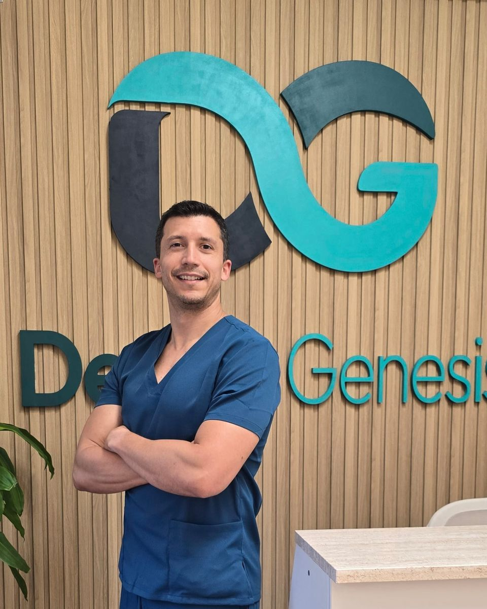

Implantología
Implantes unitarios, múltiples y rehabilitaciones completas, planificados con software de diagnóstico 3D.
Cirugía oral e implantología
Odontólogo especializado en cirugía bucal, implantología y regeneración ósea guiada. Más de 12 años devolviendo función y estética a sus pacientes con un trato profesional y cercano.

Sobre el doctor
El Dr. Joseph Cesares se licenció en Odontología por la Universidad Central de Venezuela en 2012 y ejerce en España desde 2015, con el título homologado. Completó su formación con un Máster en Odontología Integrada y Cirugía Oral por la Universidad Antonio de Nebrija.
Su práctica se centra en la cirugía bucal y la implantología: desde la colocación de implantes y la prótesis sobre ellos hasta las técnicas de regeneración ósea que permiten tratar casos con poco hueso. Conoce bien el norte y el sur de Tenerife, donde ha trabajado como cirujano implantólogo en clínicas privadas y en el Hospital San Juan de Dios de Santa Cruz.
Entiende que muchos pacientes llegan con miedo o con dudas, por eso dedica tiempo a explicar cada paso y busca resultados que duren: tratamientos de calidad, bien planificados y con seguimiento.
“Mi compromiso es que cada paciente salga sabiendo qué le vamos a hacer, por qué, y con la confianza de que el resultado está pensado para durar.”
Áreas de trabajo
Implantes unitarios, múltiples y rehabilitaciones completas, planificados con software de diagnóstico 3D.
Extracciones complejas, cordales incluidos y cirugía preprotésica con anestesia local.
Técnicas de regeneración horizontal y vertical para colocar implantes cuando falta hueso.
Coronas, puentes y prótesis sobre implantes que recuperan la función y la estética.
Cirugía plástica de encía alrededor de implantes para un resultado más natural.
Prevención y tratamiento de la inflamación alrededor de los implantes para que duren.
Formación
Universidad Antonio de Nebrija, Madrid.
Universidad Central de Venezuela. Título homologado en España en 2014.
Preparador ad honorem de la Cátedra de Radiología, Universidad Central de Venezuela.
Trayectoria
Denta Genesis, La Orotava.
Hospital San Juan de Dios de Santa Cruz de Tenerife y clínicas dentales privadas en Santa Cruz y el sur de la isla.
Departamentos de cirugía y prótesis en clínicas de España.
Clínica privada y servicio público de salud en Caracas (Venezuela).
¿Quieres que el Dr. Cesares valore tu caso?
Primera visita sin compromiso en La Orotava.